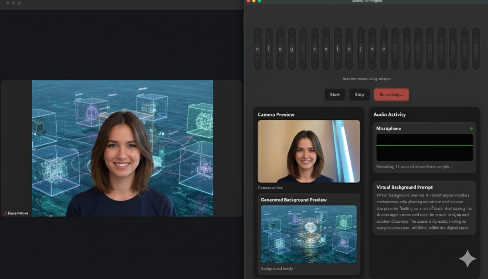

Zoom Companion
Slowly Unhinged
Slowly Unhinged keeps your meetings lively with gesture and voice-driven
virtual backgrounds. Built for the
No Keyboards Allowed
hackathon, it blends a native macOS companion app, a cloud hub, and a
Zoom in-meeting app to generate bespoke visuals that track the ongoing
conversation.

Download
Grab the latest build from the
GitHub Releases page
and start experimenting with Slowly Unhinged in your next meeting.
How It Works
-
Companion App (macOS + Tauri) captures audio, runs
local transcription via Docker Model Runner, and recognises gestures.
-
Hub securely bridges the Zoom app to your local
machine without exposing localhost.
-
Zoom App reacts to the conversation and swaps your
backgrounds in real time.
Highlights
- Hands-free control with swipe gestures and a clap-to-confirm workflow.
- Privacy-first design keeps transcription and prompt generation entirely local.
- Image generation through Gemini (Nano Banana) using only sanitised prompts.